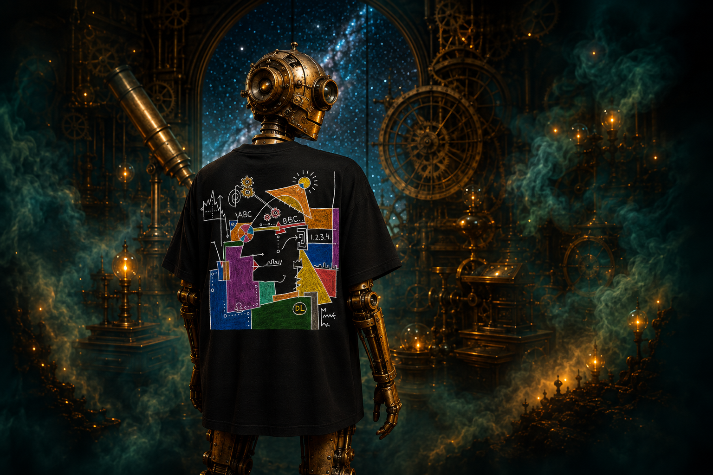
Signal 001
Birthwatcher
An observatory signal rendered in hand-drawn colour—watched over by brass, dark steel and distant instruments.
View on AmazonHalloween collection / 01
Move horizontally. Baron follows your position and changes what he points to as you cross the midpoint.
Original artwork / Mechanical imagination
Technognostic brings a hand-drawn visual language into contact with symbolic imagery, technology and cosmic imagination. Each work begins as an image with its own internal logic, then finds a second life on cloth.
Object in rotation
A mechanical study of a garment in motion. Follow the full rotation from the front mark to the large artwork across the back.
Scroll to rotate
Representative still shown because reduced motion is enabled.
Featured signals

Signal 001
An observatory signal rendered in hand-drawn colour—watched over by brass, dark steel and distant instruments.
View on AmazonSignal 002
A mechanical witness follows an encoded spiral through orbital lines, quiet distance and deep indigo space.
View on Etsy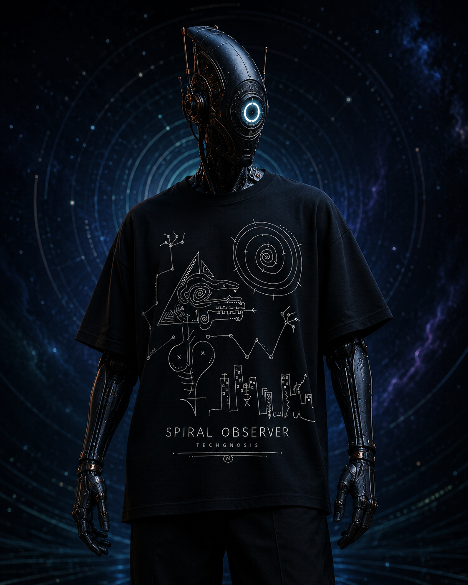
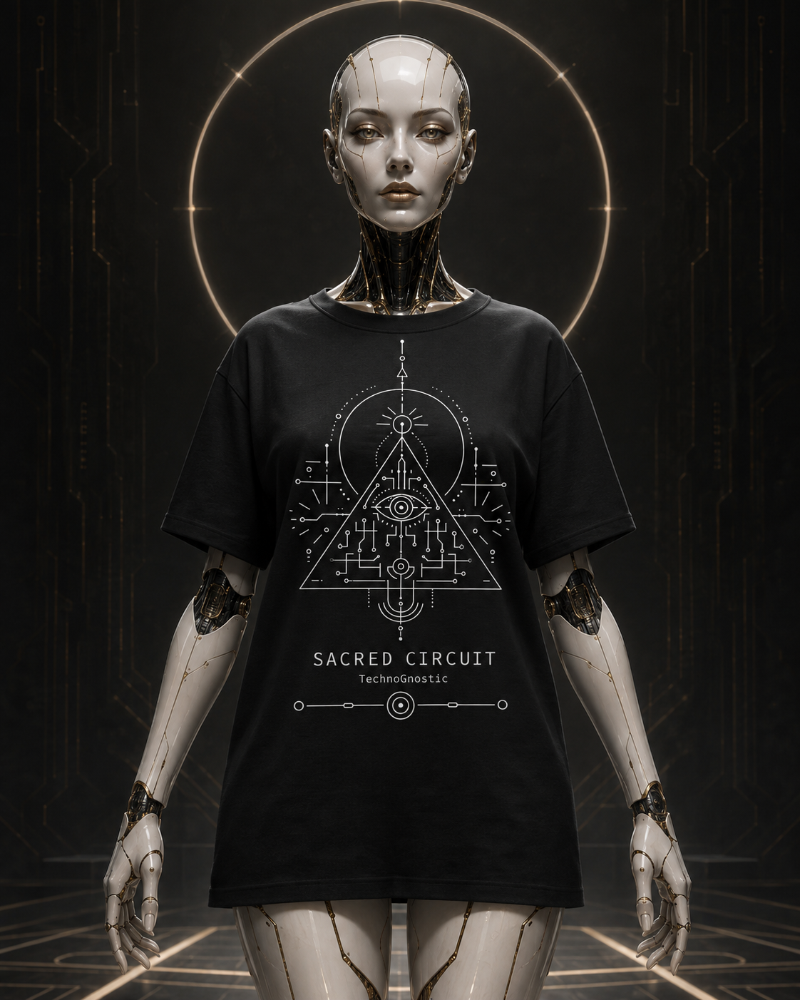
Signal 003
Fine circuitry becomes a symbolic architecture: balanced, precise and held within deliberate silence.
View on AmazonOriginal work
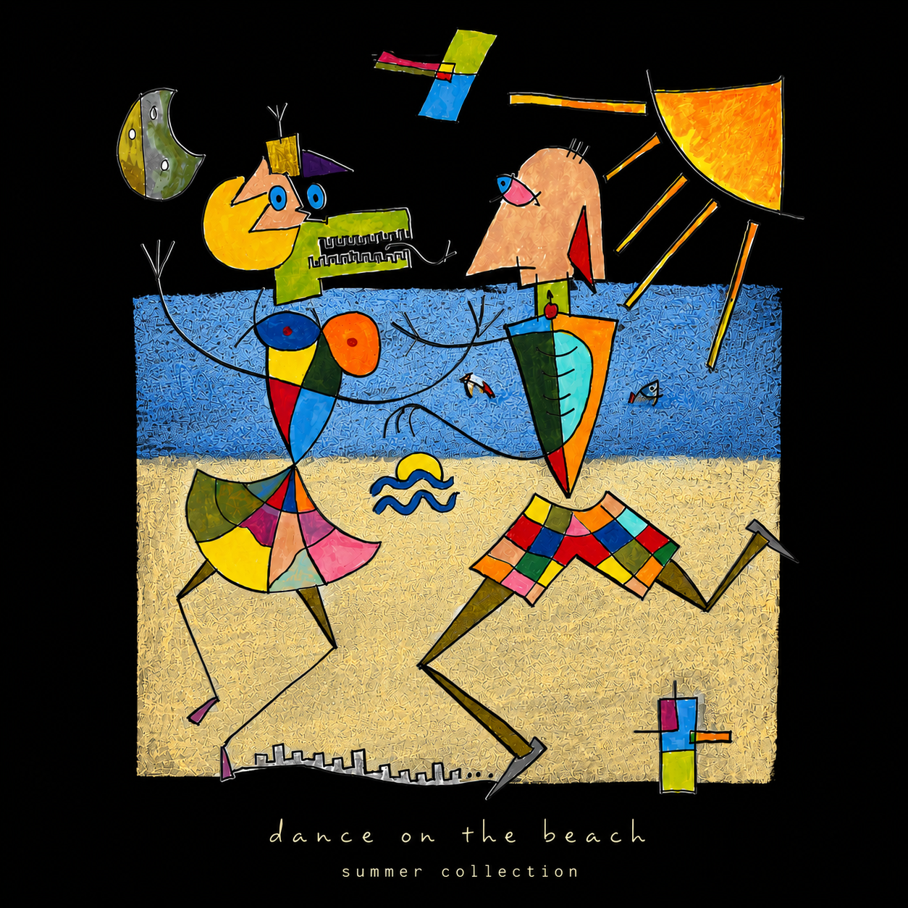
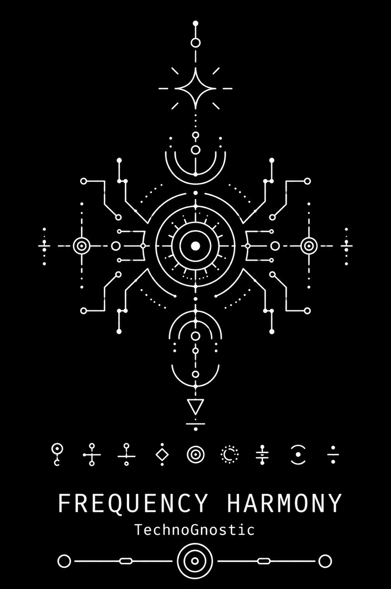
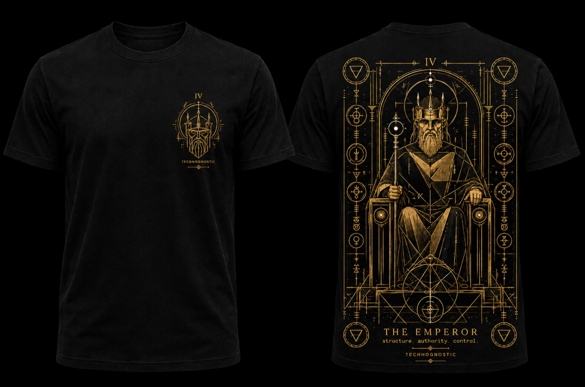
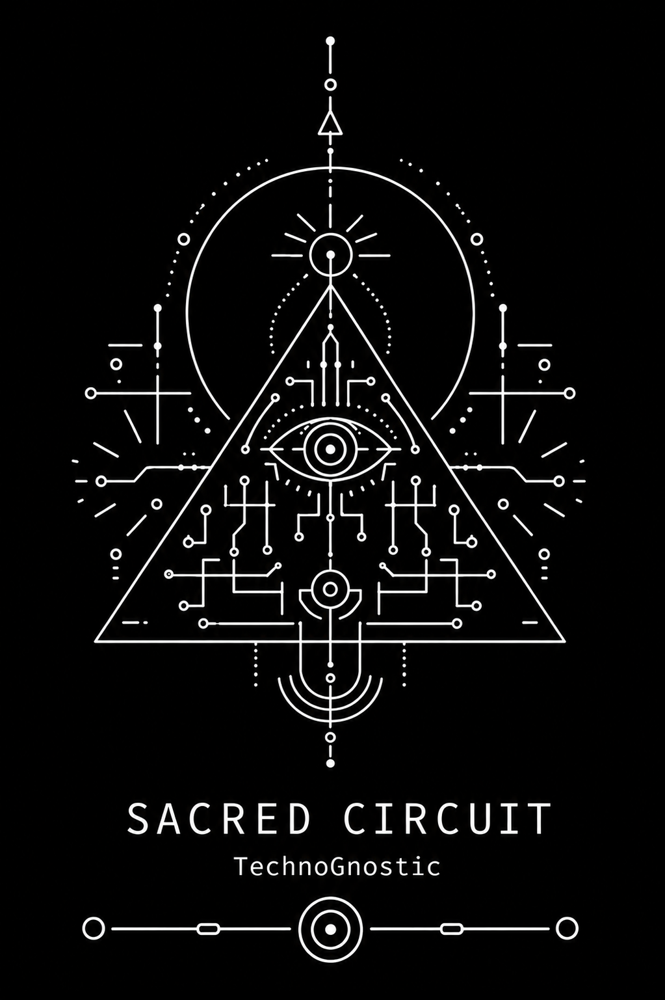
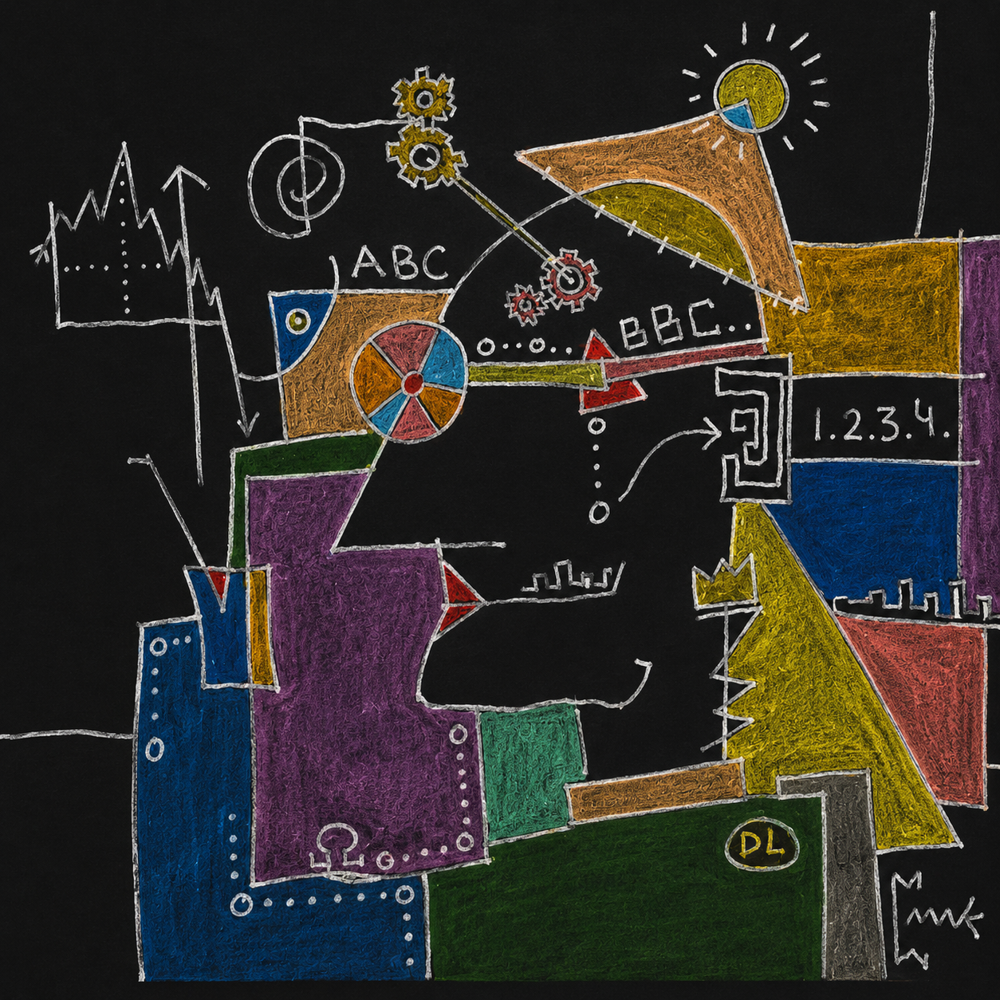
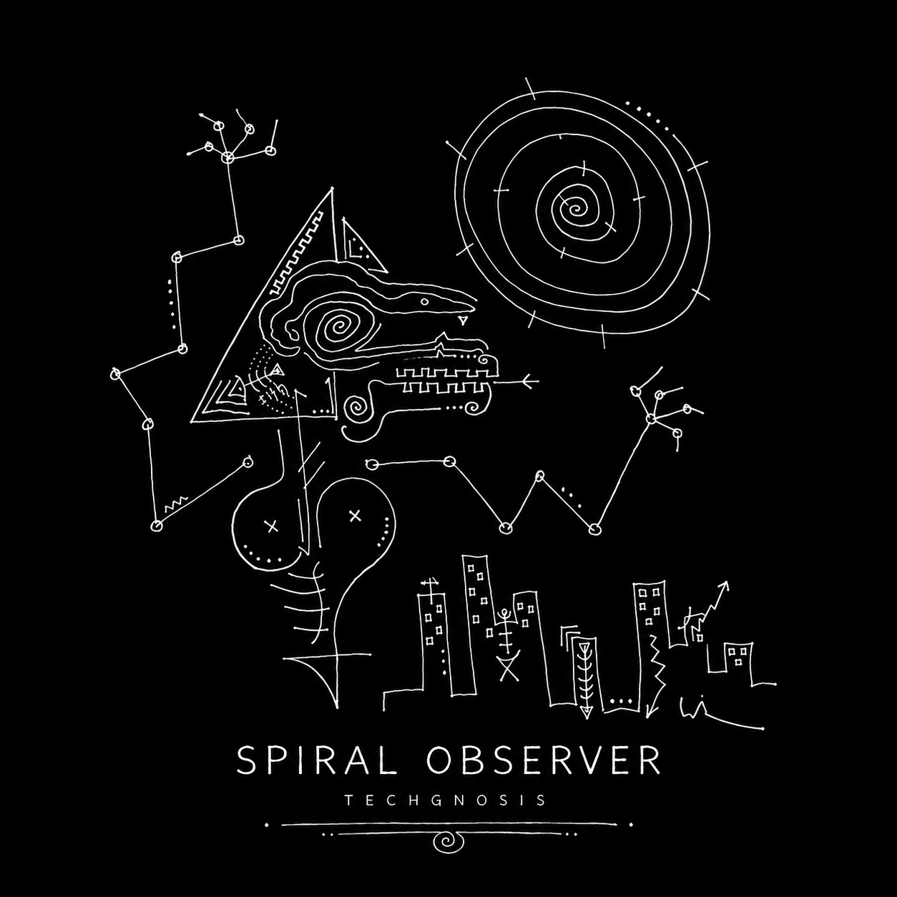
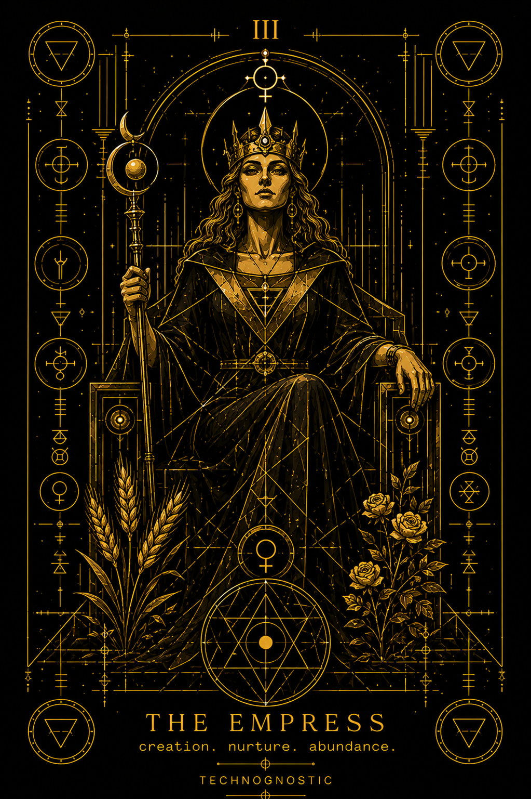
Artist & process
The available archive reveals a process of drawing, inversion, refinement and translation. Original marks are tested against light and dark grounds before becoming a wearable composition.
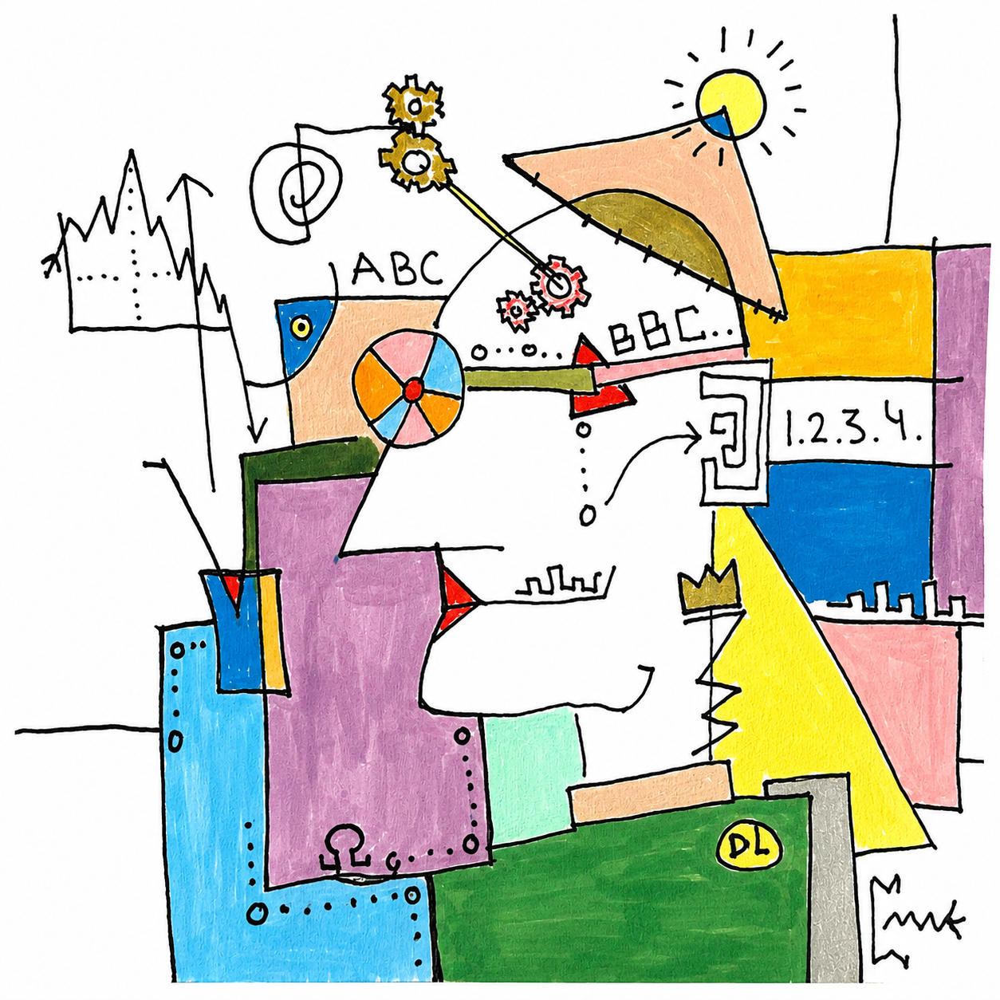
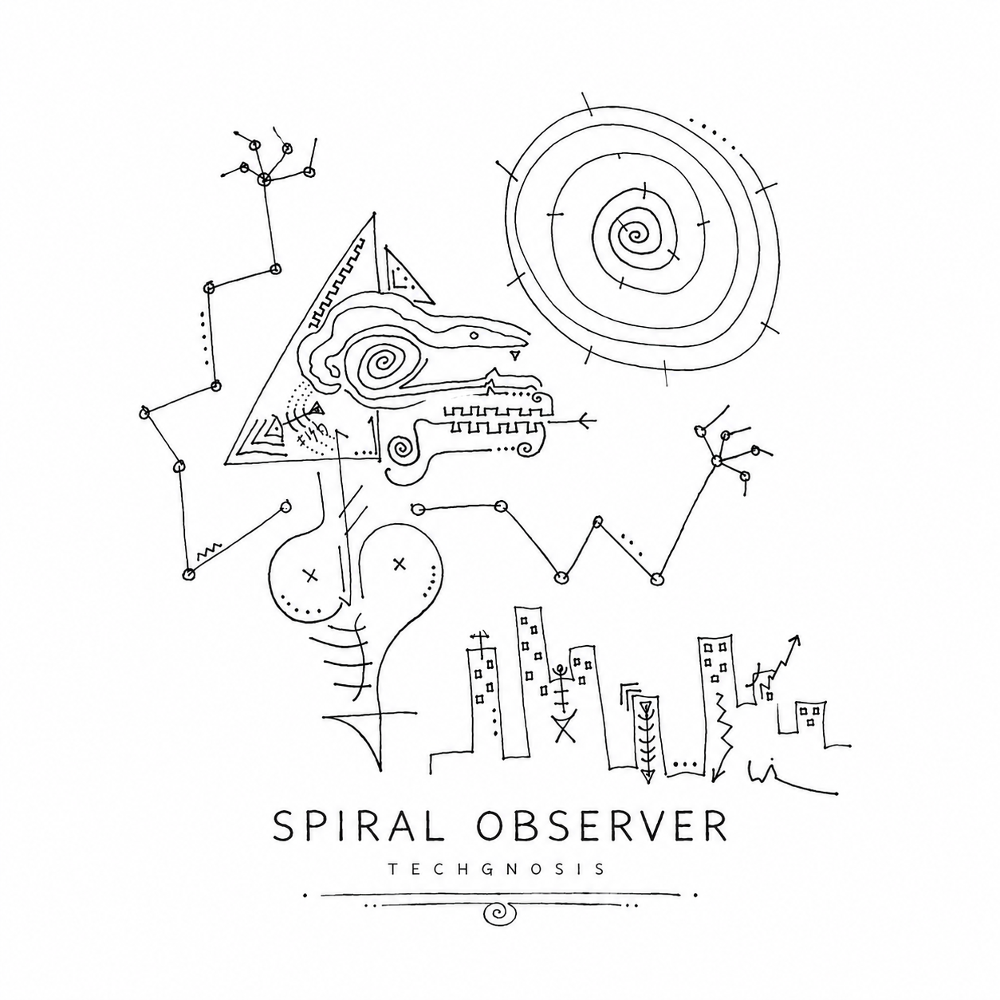
External stores
Purchases are completed through external marketplace websites. Product links below are temporary placeholders.